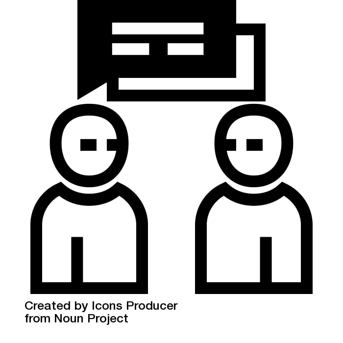
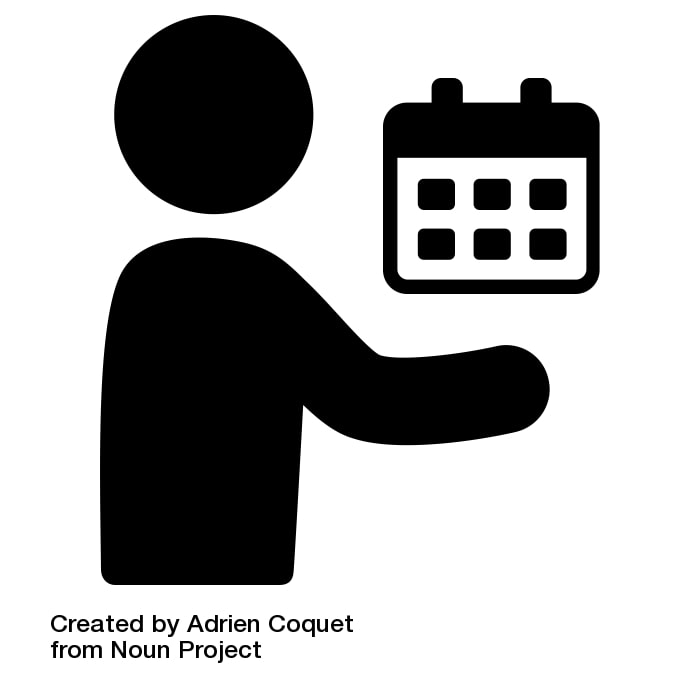

When writing a story, the first to begin with is research. The main purpose of the research is to get deep into the topic so that something helpful can be churned out which can be helpful for everybody. It's liklely that someone has reported on a similar topic before you and you can use that as a starting point to help guide you in the writing process.
This is self-explanatory mainly because it's something everyone-journalist or not- knows how to do. Be inquisitive and curious. Tap into all of the resources around you and most times, that's the people you see everyday. Ask your professors, classmates, residents of your community districts, whomever you please. That's the only way you'll get the answers to your questions.
In other words, proper preparation prevents poor performance. Every journalist has a deadline to meet. It is important to utilize your time effectively, to avoid poor work or a late deadline. Give yourself a healthy amount of time to piece your story together and edit it to perfection. You'll thank yourself later.